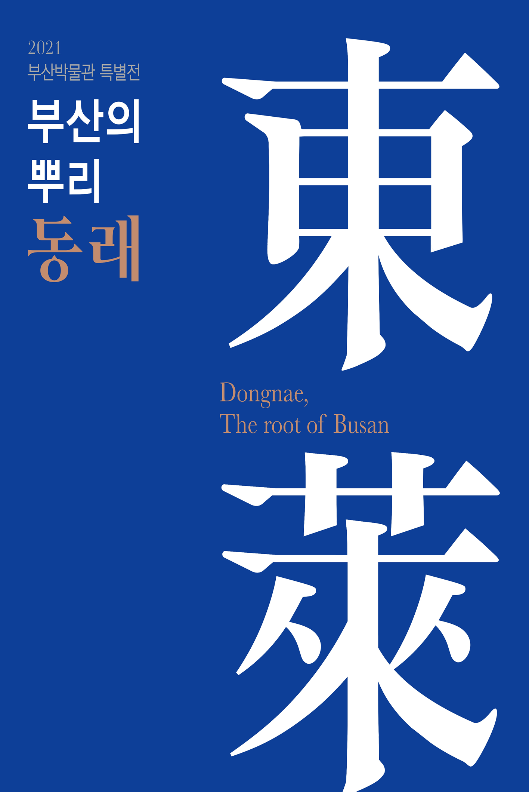
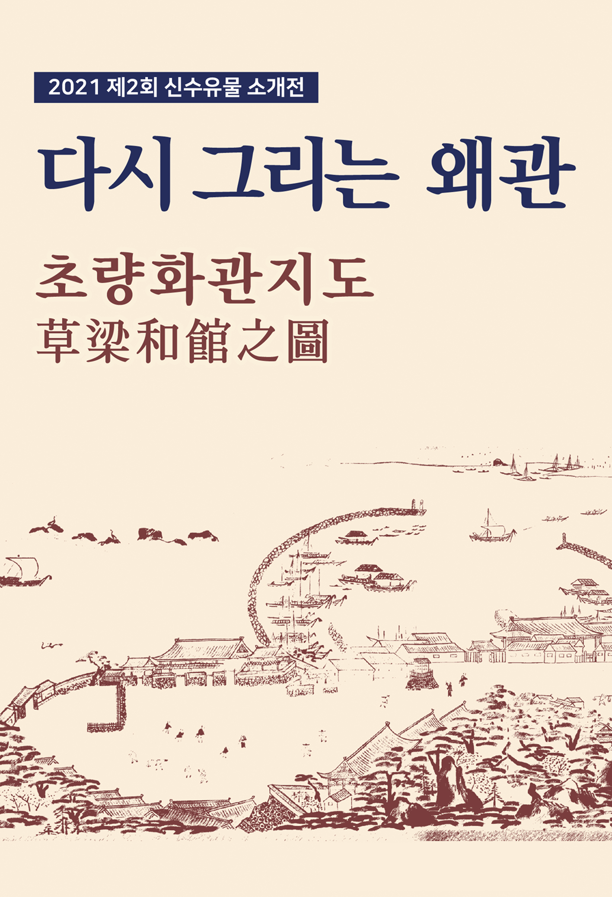
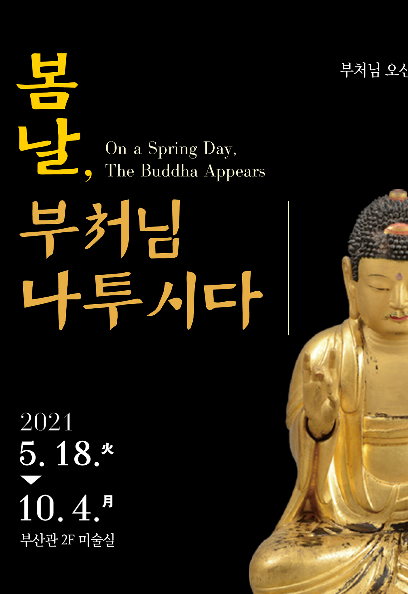
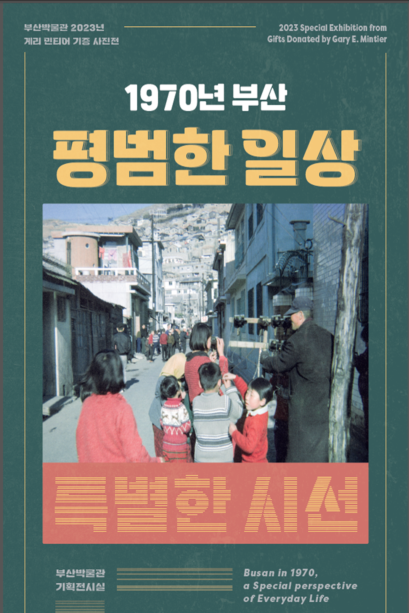
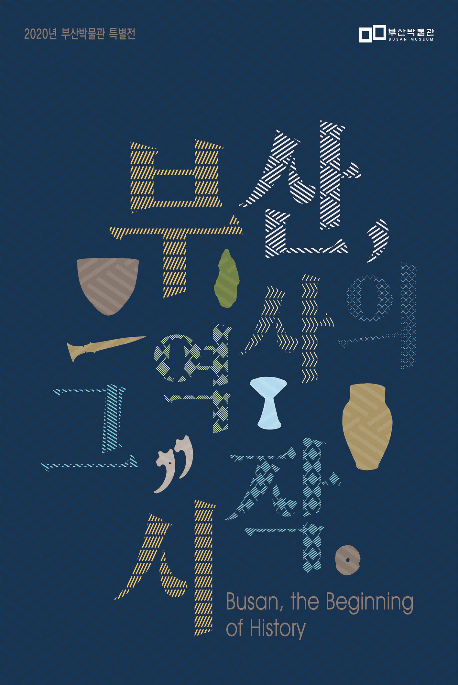

Busan Museum Exhibition

-
진행중인 전시
기획 전시 부산을 지킨 조선 갑옷
기간 | 2025.06.23 ~ 08.29 장소 | 부산박물관 기증전시실 -
진행중인 전시
'LOOP Lab Busan' 연계 전시 『박물관, 미디어 아트를 만나다』
기간 | 2025.06.21 ~ 07.29 장소 | 부산박물관 미술실 -
진행중인 전시
수첩에 담긴 아버지의 꿈
기간 | 2025.04.23 ~ 06.17 장소 | 부산박물관 근대실 -
진행중인 전시
수집의 기쁨 공감의 즐거움
기간 | 2025.03.22 ~ 05.09 장소 | 부산박물관 기증전시실 -
진행중인 전시
치유의 시간, 부처를 만나다
기간 | 2025.03.02 ~ 05.03 장소 | 부산박물관 기증전시실 -
과거 전시
조선시대 부산의 화가들
기간 | 2025.02.15 ~ 03.29 장소 | 부산박물관 미술실 -
과거 전시
조선의 목가구
기간 | 2025.02.01 ~ 03.19 장소 | 부산박물관 기증전시실 -
과거 전시
책거리 : 책과 염원을 담은 정물화
기간 | 2025.01.23 ~ 03.02 장소 | 부산박물관 미술실 -
과거 전시
부산의 뿌리 동래
기간 | 2024.11.16 ~ 12.29 장소 | 부산박물관 조선실 -
과거 전시
다시 그리는 왜관 초량화관지도
기간 | 2024.10.09 ~ 11.30 장소 | 부산박물관 미술실 -
과거 전시
봄날, 부처님 나투시다
기간 | 2024.09.12 ~ 10.21 장소 | 부산박물관 기획전시실 -
과거 전시

칼과 현 가야본성
기간 | 2024.08.11 ~ 09.29 장소 | 부산박물관 기획전시실 -
과거 전시
‘루프 랩 부산(LOOP Lab Busan)' 연계 전시 『박물관, 미디어 아트를 만나다』
기간 | 2024.07.09 ~ 09.11 장소 | 부산박물관 현대실 -
과거 전시
1970 부산, 평범한 일상/p> 기간 | 2024.06.05 ~ 07.10 장소 | 부산박물관 근대실